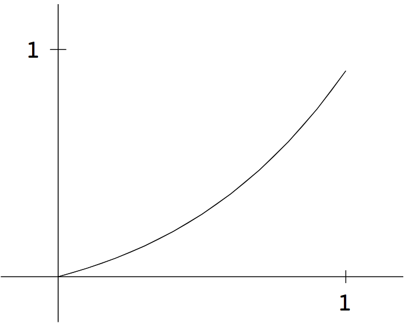
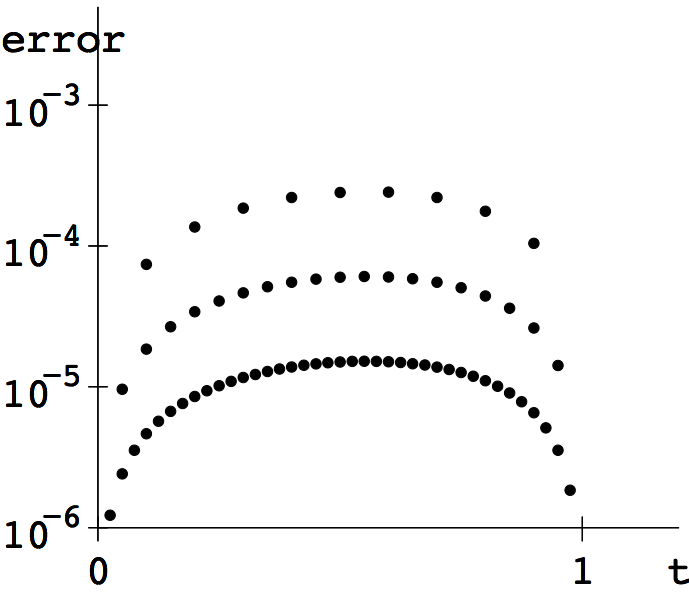
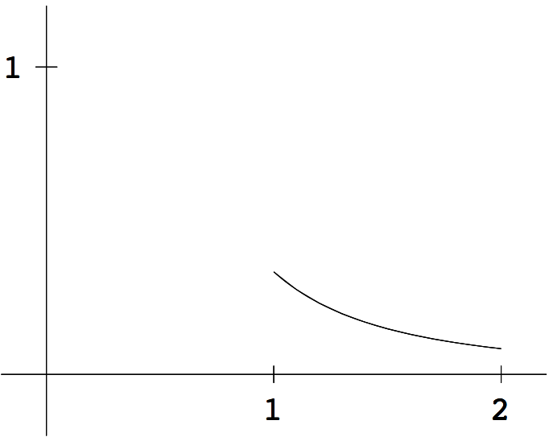
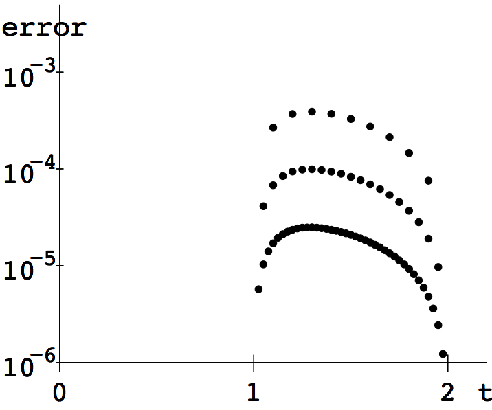
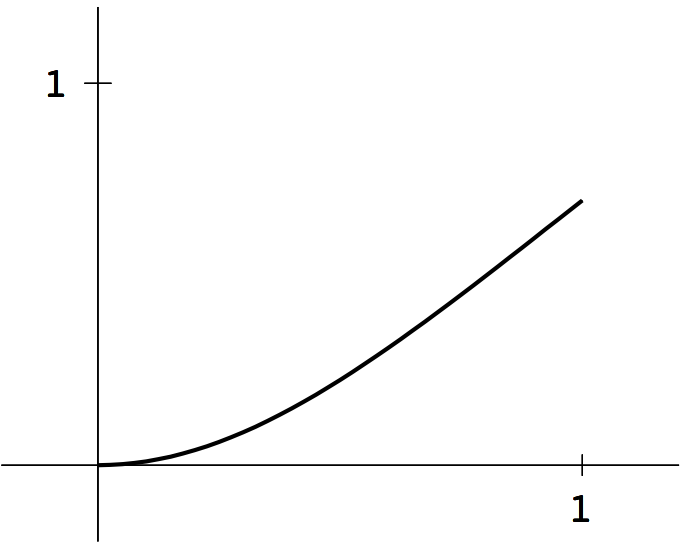
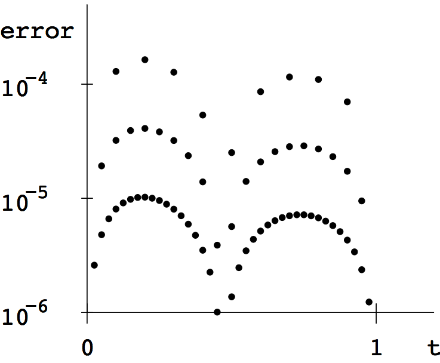
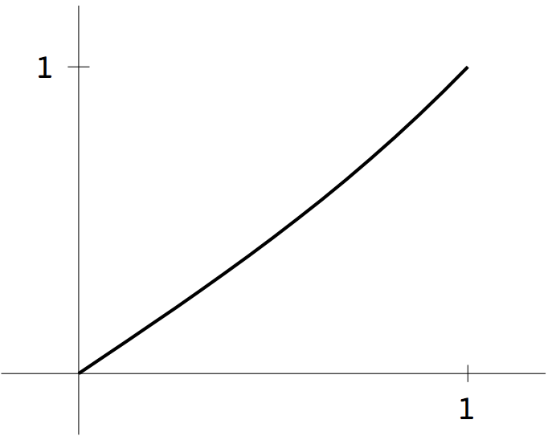
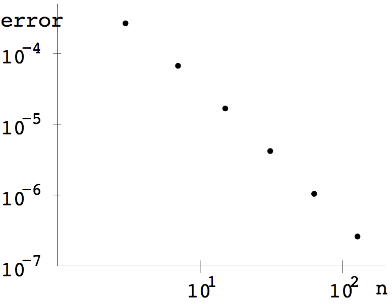
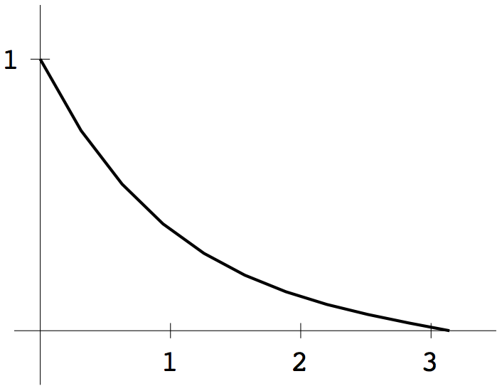

COMPUTER PROBLEMS 7.2
\(\def\ds{\displaystyle} \)
1 (a) Substituting the finite difference approximation (7.12)
for \(y''\) results in the equation
\[\frac{w_{i+1}-2w_i+w_{i-1}}{h^2}=w_i+\frac{2}{3}e^{t_i},\]
or
\[w_{i+1}-2w_i+w_{i-1}-h^2w_i-\frac{2}{3}h^2e^{t_i} = 0\]
at \(t_i\), where \(h=1/(n+1), w_0=y(0)=0\), and \(w_{n+1}=y(1)=e/3\). Evaluating
at \(t_1, \ldots, t_n\) leads to
the system of \(n\) linear equations in \(n\) unknowns
\[\left[\begin{array}{cccccc}
-2-h^2&1\\
1&-2-h^2&1\\ \\
&\ddots&&\ddots&\ddots\\ \\
&&&1&-2-h^2&1\\
&&&&1&-2-h^2\\
\end{array}\right]
\left[\begin{array}{c}
w_1\\ \\ \\\vdots\\ \\ \\w_n\\
\end{array}\right]=
\left[\begin{array}{l}
\frac{2}{3}h^2e^{t_1}-0\\ \ \ \ \ \ \vdots\\ \\
\frac{2}{3}h^2e^{t_i}
\\ \\ \ \ \ \ \ \vdots \\
\frac{2}{3}h^2e^{t_n}-\frac{e}{3}\\
\end{array}\right].\]
Solving for \(w_i\) with \(n=9, 19\), and \(39\) gives the approximate
solutions in the left plot, which are indistinguishable at the
resolution shown. On the right we have plotted the errors at each \(t_i\),
for \(n=9, 19\) and \(39\),
by comparing with the correct solution.


1 (b) Similar to (a).
Substituting the finite difference approximation
results in
\[\frac{w_{i+1}-2w_i+w_{i-1}}{h^2}=(2+4t_i^2)w_i\]
or
\[w_{i+1}+(-2-h^2(2+4t_i^2))w_i+w_{i-1}=0\]
at \(t_i\), where \(h=1/(n+1), w_0=y(0)=1\), and \(w_{n+1}=y(1)=e\). Evaluating
at \(t_1, \ldots, t_n\) leads to
the system of \(n\) linear equations in \(n\) unknowns
\[\left[\begin{array}{cccccc}
A_{11}&1\\
1&A_{22}&1\\ \\
&\ddots&&\ddots&\ddots\\ \\
&&&1&A_{n-1,n-1}&1\\
&&&&1&A_{nn}\\
\end{array}\right]
\left[\begin{array}{c}
w_1\\ \\ \\\vdots\\ \\ \\w_n\\
\end{array}\right]=
\left[\begin{array}{c}
-1\\\vdots\\ \\
0
\\ \\\vdots \\
-e\\
\end{array}\right]\]
where \(A_{ii}=-2-2h^2-4t_i^2h^2\).
Solving for \(w_i\) gives the approximate
solutions in (a), and the errors
for \(n=9, 19\) and \(39\) in (b).
3 (a) The program nlbvpfd.py can be adapted to apply to the
equation. The function that the \(w_i\) must satisfy is \(F(w)=0\), where the \(i\)th
component of \(F\) is \(w_{i-1}-2w_i-18h^2w_i^2+w_{i+1}\). The Jacobian is
\[DF=\left[\begin{array}{cccccc}
-2-36h^2w_1&1\\
1&-2-36h^2w_2&1\\ \\
&\ddots&&\ddots&\ddots\\ \\
&&&1&-2-36h^2w_{n-1}&1\\
&&&&1&-2-36h^2w_n\\
\end{array}\right].\]
Applying 20 Newton's Method iterations determines the approximation \(w_i\), which is
plotted below along with the errors for \(n=9, 19\), and \(39\).


3 (b) The Python program nlbvpfd.py can be adapted to apply to the
equation. The solution function is \(F(w)=0\), where the \(i\)th
component of \(F\) is \(w_{i-1}-2w_i-2h^2e^{-2w_i}(1-t_i^2)+w_{i+1}\). The Jacobian is
\[DF=\left[\begin{array}{cccccc}
A_{11}&1\\
1&A_{22}&1\\ \\
&\ddots&&\ddots&\ddots\\ \\
&&&1&A_{n-1,n-1}&1\\
&&&&1&A_{nn}\\
\end{array}\right]\]
where \(A_{ii}=-2+4h^2e^{-2w_1}(1-t_i^2)\).
Applying 20 Newton's Method iterations determines the approximation \(w_i\), which is
plotted below along with the errors for \(n=9, 19\), and \(39\).


5 (a) The two linearly independent solutions of the differential equation
\(y''=y\) are \(e^t\) and \(e^{-t}\). By fitting coefficients to the boundary
values, the solution of the boundary value problem is found to be
\[y(t)=\frac{e^{1+t}-e^{1-t}}{e^2-1}.\]
5 (b)
Using the second-order finite difference expression for \(y''\), the
equations
\[\frac{w_{i+1}-2w_i+w_{i-1}}{h^2}-w_i = 0\]
can be written in matrix form as
\[\left[\begin{array}{cccccc}
-2-h^2&1\\
1&-2-h^2&1\\ \\
&\ddots&&\ddots&\ddots\\ \\
&&&1-h&-2-h^2&1\\
&&&&1&-2-h^2\\
\end{array}\right]
\left[\begin{array}{c}
w_1\\ \\ \\\vdots\\ \\ \\w_n\\
\end{array}\right]=
\left[\begin{array}{c}
0\\\vdots\\ \\
0
\\ \\\vdots \\
-1\\
\end{array}\right].\]
Solving the system of equations for \(n=15\) results in the approximate
solution shown below.

5 (c) We repeat the solutions in (b) for \(n=2^p-1, p=2,\ldots, 7\),
and compute the errors at \(t=1/2\). The plot below shows that
the errors are inversely proportional to \(n^2\), as the theory predicts.

7 The approximation \(w_h(3/2)=w_{2^{p-1}}\) for \(y(1/2)\) in Computer Problem
5, where \(n=2^p-1\), is second order,
meaning that the error is proportional to \(h^2\).
Define \(N_1(h)= w_{2^{p-1}}\). The extrapolation formula from Section 5.1
gives a new formula
\[N_2(h) = \frac{2^2N_1(\frac{h}{2})-N_1(h)}{2^2-1}\]
that turns out to be a fourth order formula for \(y(1/2)\). Extrapolating
again gives the sixth order formula
\[N_3(h) = \frac{2^4N_2(\frac{h}{2})-N_2(h)}{2^4-1}.\]
Using the approximations from the finite difference method as the entries
in \(N_1(h)\), we can build the following triangle.
\[\begin{array}{ccc}
N_1(2^{-2}) = 0.443674176776&N_2(2^{-2})=0.443409958575&
N_3(2^{-2})= 0.443409442296\\
N_1(2^{-3}) = 0.443476013126&N_2(2^{-3})=0.443409474564\\
N_1(2^{-4}) = 0.443426109204\\
N_1(2^{-5}) = 0.443413610320\\
N_1(2^{-6}) = 0.443410484165\\
N_1(2^{-7}) = 0.443409702536\\
\end{array}\]
Comparing with the correct value \(\ds y(1/2)=
\frac{e^{3/2}-e^{1/2}}{e^2-1} \approx 0.443409441985\), we find the
errors
\[\begin{array}{lll}
2.65\times 10^{-4}\ \ \ \ \ \ \ \ \ \ \ \ \ \ \ \
\ \ \ \ \ \ \ \ \ \ &5.17\times10^{-7}\ \ \ \ \ \ \ \ \ \
\ \ \ \ \ \ \ \ \ \ \ \ \ \ \ \ &3.11\times 10^{-10}\ \ \ \ \ \ \ \ \ \ \\
6.66\times 10^{-5}\ \ \ \ \ \ \ \ \ \ &3.26\times10^{-8}\ \ \ \ \ \ \ \ \ \ \\
1.67\times 10^{-5}\ \ \ \ \ \ \ \ \ \ \\
4.17\times 10^{-6}\ \ \ \ \ \ \ \ \ \ \\
1.04\times 10^{-6}\ \ \ \ \ \ \ \ \ \ \\
2.61\times 10^{-7}\ \ \ \ \ \ \ \ \ \ \\
\end{array}\]
Note that \(N_3(2^{-2})\), built only from information given by
\(N_1(2^{-2}), N_1(2^{-3})\), and \(N_1(2^{-4})\), is orders of magnitude
more accurate than \(N_1(2^{-7})\). This is an instance of the great power of
extrapolation.
9 Newton's Method is used to solve the nonlinear
finite difference method
equations \(w_{i-1}-2w_i-h^2\sin w_i+w_{i+1}=0\). The Jacobian is
\[DF=\left[\begin{array}{cccccc}
-2-h^2\cos w_1&1\\
1&-2-h^2\cos w_2&1\\ \\
&\ddots&&\ddots&\ddots\\ \\
&&&1&-2-h^2\cos w_{n-1}&1\\
&&&&1&-2-h^2\cos w_n\\
\end{array}\right].\]
Newton's Method determines the approximation \(w_i\), which is
plotted below for \(n=9, 19\) and \(39\).

11 Consider the function \(G(c)=w_c(1/2)-1/4\), that returns the value of the
boundary value problem
\[
\left\{ \begin{array}{l}
y'' = cy(1-y)\\
y(0)=0\\
y(1)=1\\
\end{array}\right.
\]
at \(t=1/2\), minus \(1/4\). Newton's Method can be used to approximate the
solution \(w\) of the nonlinear BVP. Check that \(G(10)G(15)\lt 0\), implying
a root between \(c=10\) and \(c=15\). Using the Bisection Method, for example,
the root can be refined to approximately \(11.7856\). The number \(n\) used
in the BVP approximation needs to be fairly large to get this accuracy,
although applying extrapolation as in Computer Problems 7 and 8 can
reduce the computation needed.